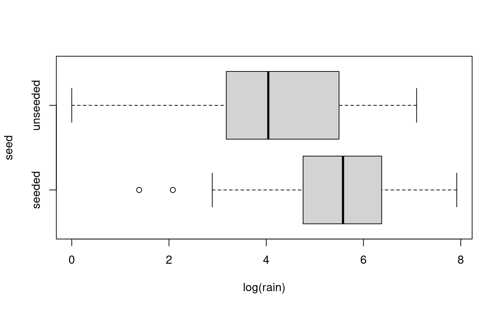
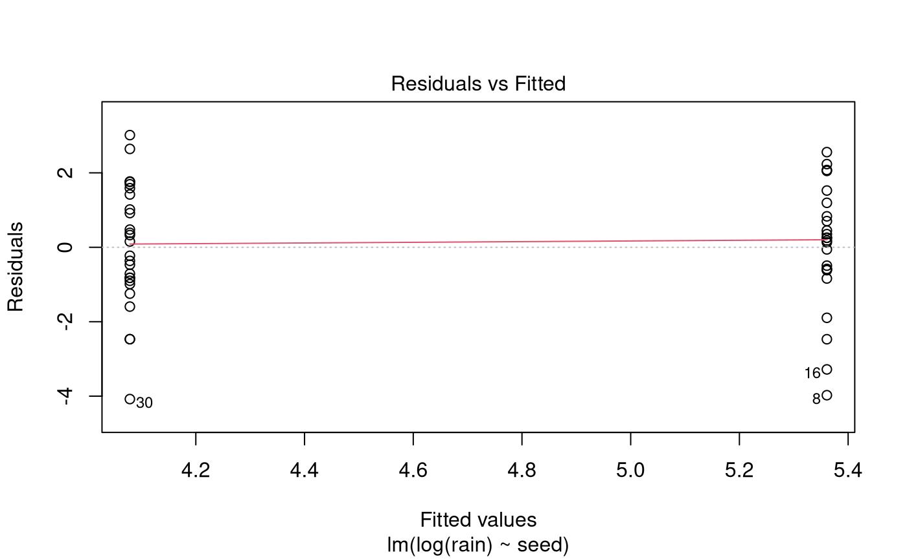
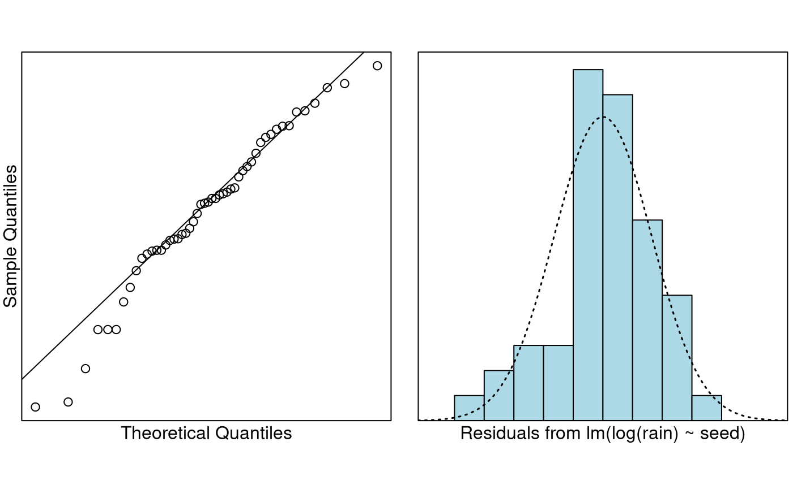

Problem
The data in this question come from an experiment to see whether
cloud-seeding works. Cloud-seeding is the process of firing silver
nitrate
(AgNO)
into the clouds. Water coalesces around the silver nitrate particles,
hopefully getting large enough to precipitate (rain). The measurements
in this study are in acre-feet. One acre-foot is the amount of water it
takes to fill one acre uniformly to the depth of one foot. One acre-foot
is about 1.2 million litres of water (1233481.85532 litres to be exact).
This dataset is included in the s20x library.
The variables of interest are:
-
rain: total rainfall. -
seed: is a factor with two levels,seededandunseeded.
Question of Interest
We wish to see whether cloud seeding produces more rain. Also, what is the typical rainfall from seeded and unseeded clouds?
Read in and Inspect the Data
Looks like our old right-skewed friend again. Maybe, just maybe, a log-transformation would work. Let’s try it.

Yup. Looks much better, and we have preliminary evidence that the seeding seems to work. Should we be worried about equality of variance?
summaryStats(log(rain) ~ seed, data = rain.df)## Sample Size Mean Median Std Dev Midspread
## seeded 24 5.360901 5.579017 1.665145 1.518865
## unseeded 26 4.078695 4.042127 1.661585 2.198249No. On the log-scale, the standard deviations are nearly identical, and the midspreads are well below a factor of two different. Let’s go ahead and fit the model.
Model Building and Check Assumptions

normcheck(rain.fit)
cooks20x(rain.fit)
summary(rain.fit)##
## Call:
## lm(formula = log(rain) ~ seed, data = rain.df)
##
## Residuals:
## Min 1Q Median 3Q Max
## -4.0787 -0.8206 0.1679 1.1496 3.0139
##
## Coefficients:
## Estimate Std. Error t value Pr(>|t|)
## (Intercept) 5.3609 0.3395 15.790 < 2e-16 ***
## seedunseeded -1.2822 0.4708 -2.723 0.00899 **
## ---
## Signif. codes: 0 '***' 0.001 '**' 0.01 '*' 0.05 '.' 0.1 ' ' 1
##
## Residual standard error: 1.663 on 48 degrees of freedom
## Multiple R-squared: 0.1338, Adjusted R-squared: 0.1158
## F-statistic: 7.416 on 1 and 48 DF, p-value: 0.008985
# Let's refit the model so that `unseeded` is the base level.
rain.df$seed = relevel(rain.df$seed, ref = "unseeded")
rain.fit.2 = lm(log(rain) ~ seed, data = rain.df)
summary(rain.fit.2)##
## Call:
## lm(formula = log(rain) ~ seed, data = rain.df)
##
## Residuals:
## Min 1Q Median 3Q Max
## -4.0787 -0.8206 0.1679 1.1496 3.0139
##
## Coefficients:
## Estimate Std. Error t value Pr(>|t|)
## (Intercept) 4.0787 0.3262 12.504 < 2e-16 ***
## seedseeded 1.2822 0.4708 2.723 0.00899 **
## ---
## Signif. codes: 0 '***' 0.001 '**' 0.01 '*' 0.05 '.' 0.1 ' ' 1
##
## Residual standard error: 1.663 on 48 degrees of freedom
## Multiple R-squared: 0.1338, Adjusted R-squared: 0.1158
## F-statistic: 7.416 on 1 and 48 DF, p-value: 0.008985## 2.5 % 97.5 %
## (Intercept) 30.656034 113.813484
## seedseeded 1.398702 9.289329## 2.5 % 97.5 %
## (Intercept) 2965.60341 11281.3484
## seedseeded 39.87024 828.9329Confidence Interval Output
pred.df = data.frame(seed = c("unseeded", "seeded"))
exp(predict(rain.fit.2, pred.df, interval = "confidence"))## fit lwr upr
## 1 59.06835 30.65603 113.8135
## 2 212.91668 107.58209 421.3853Methods and Assumption Checks
The boxplots of log(rain) showed that the groups were
comparable. So, we fitted a linear model to explain
log(rain) with the explanatory factor
seed.
All model assumptions were satisified.
Our final model is where . Here if the observation was done in a seeded environment, otherwise it is zero.
Our model describes 13% of the variability in the logged measurements of total rainfall.
Executive Summary
We wish to see whether cloud seeding produces more rain.
There is strong evidence cloud-seeding works (P-value < 0.01).
We estimate that the median rain from the seeded clouds is about 40% to 830% higher than that from unseeded clouds.
The unseeded clouds produce median rainfall of 30.7 to 113.8 acre-feet, whereas for the seeded clouds it is 107.6 to 421.4 acre-feet of rain.